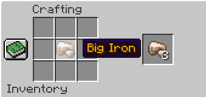
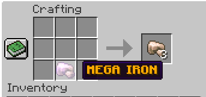
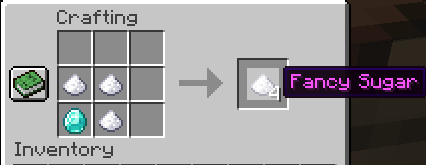
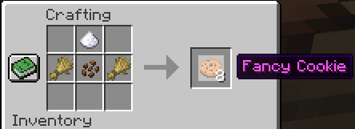
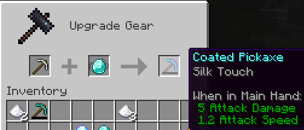
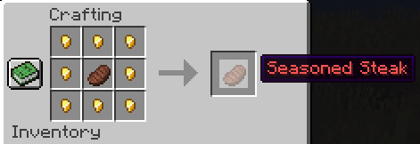
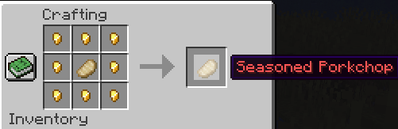

Slardcraft
What is Slardcraft?
Slardcraft is a new long-form way of playing Minecraft hosted on a Spigot server and implemented via a server
plugin. It aims to incentivize collaboration, world building, and player-to-player narrative building, whilst
being easy for new players to join in. It also takes into account the long lasting nature of an on-demand
Minecraft world that can be hosted cheaply for years, which allows for the preservation of investments made by players over a long period of time. Another goal of Slardcraft is to simply shake up the
Minecraft progression pattern that players may have become accustomed to by incentivizing alternate styles of
play.
Play Slardcraft
Slardcraft is hosted on an on-demand server, meaning anybody can turn the server on whenever they want to play. To start the server simply visit the initialization website in your web browser linked down below.
Then wait for the server to start up, it typically takes about 5 minutes. After the server is started, connect to the server in your Minecraft client with the server domain name below.
Initialization Website: init.slardcraft.jacobyng.com
IP/Domain name: play.slardcraft.jacobyng.com
Gameplay Changes and Notes v1.0
A core philosphy of Slardcraft is having end game power gains be marginal rather than linear and for power to be
transient, lending more opportunities for less developed players to surpass developed ones.
-
Armor and tool progression is capped early. This is to allow for mobs to always be a threat to players as
well as for new players to be able to catch-up rapidly to older players.
-
Armor and tools are capped at iron tier, meaning diamond and netherite tools are not possible to
craft, find, or trade for.
-
Enchantments are no longer available for tiers stone and above including gold tier. They are also no longer
available for bows, crossbows, tridents, and shields. Item drops, chest loot, and villager trades are sanitized for
enchantments if in the above tiers.
-
Mending has also been removed.
-
Note: Enchantments are still available for leather armor, wooden tools, turtle helmets,
and other non-main tools.
-
Note: Mending was removed to incentivize a need to always manage tools and resources.
This is largely already implemented from just not being able to enchant iron, but simply
extended it to the enchantable tools and armor as well.
-
Note: Full Prot IV leather armor offers 4% more protection than Iron armor.
-
Elytra has been removed, but will be re-added with a different way of obtaining later. It will most likely
be some sort of rental system. This is to incentivize collaboration in transportation and create more
rewarding experiences for discovering new areas. It also has a secondary benefit of reducing server load for
generating and loading chunks when flying via elytra. When picking up an elytra, it will be turned into
phantom membrane.
The above changes have the side effect of slowing down the harvesting of materials, so new items and recipes
have been added to counteract these nerfs.
-
New big (10%) and mega (1%) ore variants have a percent chance of dropping instead of regular ore for iron,
gold, and diamond. These can be crafted into multiples of their regular ore (1 big = 3 reg; 1 mega = 3 big).


-
New fancy sugar and fancy cookie recipes have been added. Fancy cookies offer 22.5s of Haste 1 which
increases the speed of mining resources. They are crafted with the cookie recipe with the addition of one
fancy sugar.


-
New coated pickaxe item and smithing recipe have been added. This "new" item is to allow for harvesting of
ore that typically require a diamond pickaxe. (It's a default diamond pickaxe with silk touch 1 that can't
be repaired or enchanted and also has a really low durability.) It drops its component iron pickaxe upon
breaking.

There are also a few changes that are nerfed now, but are here to facilitate new planned features in upcoming
patches.
-
Iron Golems no longer drop iron on death unless created by the player.
-
Piglins and zombified piglins no longer drop golden nuggets on death, nor golden armor and tools on kill.
-
Cooked Steak and Porkchop have been nerfed to be comparable to Cooked Chicken. A seasoned variant was added
for both meats that bring it in line to current stats.


Known Issues/Bugs
-
Big and mega raw iron and gold ore can be smelted in the furnace yielding only 1 ingot each, so smelting of
these ores should be avoided.
-
Unable to repair stone tier and above tools and armor in anvil.
Server Settings
-
Slardcraft is played on Hard difficulty. This is to incentivize collaboration in the early game and increase
exhaustion rate to increase the demand for food.
-
The map is limited to a 6kx6k world. This will be increased to 10kx10k after the 1.18 update.
-
Gamerules: 50% of players required for sleep, disable elytra movement check (this is a buff to elytra
movement), and disabled announcements for achievements.
Made by Jacob Young